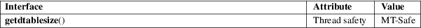

getdtablesize − get file descriptor table size
Standard C library (libc, −lc)
#include <unistd.h>
int getdtablesize(void);
Feature Test Macro Requirements for glibc (see feature_test_macros(7)):
getdtablesize():
Since glibc 2.20:
_DEFAULT_SOURCE || ! (_POSIX_C_SOURCE >= 200112L)
glibc 2.12 to glibc 2.19:
_BSD_SOURCE || ! (_POSIX_C_SOURCE >= 200112L)
Before glibc 2.12:
_BSD_SOURCE || _XOPEN_SOURCE >= 500
getdtablesize() returns the maximum number of files a process can have open, one more than the largest possible value for a file descriptor.
The current limit on the number of open files per process.
On Linux, getdtablesize() can return any of the errors described for getrlimit(2); see NOTES below.
For an explanation of the terms used in this section, see attributes(7).

The glibc version of getdtablesize() calls getrlimit(2) and returns the current RLIMIT_NOFILE limit, or OPEN_MAX when that fails.
Portable applications should employ sysconf(_SC_OPEN_MAX) instead of this call.
None.
SVr4, 4.4BSD (first appeared in 4.2BSD).
close(2), dup(2), getrlimit(2), open(2)